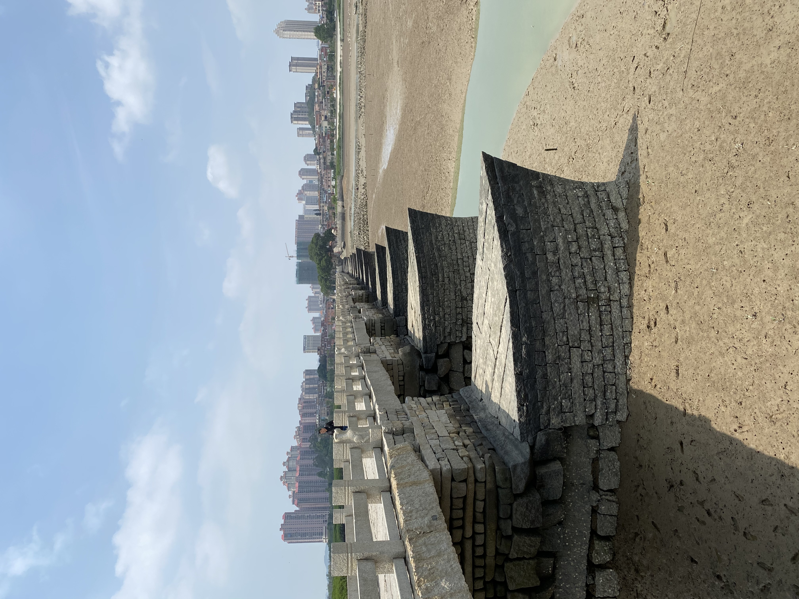

四月去了趟惠州，没几天因为锘潼有急事就送她回去了。一晃眼已经五月中旬了，终于定下来去福建玩一趟。
原定的计划是厦门+泉州。没想到天意弄人，动车到厦门后，得知要备案厦门当地的健康码。可能是因为我的身份证号是42（湖北区号）开头，即使我不是湖北籍，好几年都没到过湖北，厦门的健康码却是红的。跟厦门站的工作人员沟通备案了后，才得以出站，但是酒店都守死规矩不接待红码客人。吃了两个闭门羹，订单都退了后，将近半夜终于找到一个愿意接待的酒店住下来。
这样一番折腾下来，本来对厦门的期待就已耗去大半。想到厦门的景区很大概率也是只看厦门本地的健康码，都懒得去碰碰运气了。第二天上午就直奔泉州去了。
富有生活情趣的泉州
订了一个泉州的老牌五星级酒店，泉州酒店。这种以某个地的地名命名的酒店，一般都是年代比较久的。泉州酒店1990年建成，虽然背着五颗星，却是上个世纪的五颗星。设施处处显示着上了点年纪的豪华感。厚厚的地毯，走廊墙上的迎客松油画，古色古香的木质电梯饰板，还有砖红色的外墙。五星级酒店价格却平平，可能是很多人欣赏不来这种古典的质感吧。好处是，位置在老城区的中心，被主要的景点包围，步行美食街西街更是只要几分钟。
入住了酒店，长舒了一口气，看来极不负责的健康码只是厦门一市的特例。泉州的酒店查看了中国移动的行程查询系统，景点用的是福建省的八闽码。
好事不成双，因为疫情尚未结束的原因，泉州一部分景区还没有开放，包括市区内的知名寺庙，供奉妈祖信仰的天后宫，清真寺清净古寺、开元寺和东西塔，以及承天寺都大门紧闭。第一天吃了好几个闭门羹，倒是路上吃喝不断。
- 玖肆幺七 - 茶餐厅
- 秉正堂 - 天后宫隔壁的糖水店
- 壶见 - 闽南茶饮连锁
- 邻家闽菜馆 - 土笋冻很有特色
福建菜系独树一帜，以可口革囊星虫为原料的土笋冻最为出名。很多人都有所耳闻这种像虫子馅的果冻的黑暗料理。其实味道比较淡，有淡淡的海腥味，在夏天蘸着蘸水吃很清凉。虽然与广东相邻，但闽菜与粤菜迥然不同，反而与台湾菜更加相近。
泉州车牌号闽C，排在厦门前面，但扎扎实实是个发展缓慢的老城。城区里老房子居多，四处穿行的电动车成了狭窄街道里的血液。午后，在街道上闲逛，行道树一直延伸到道路上空，在路上打了一把严严实实的伞。两边的商店都是貌不惊人的样子，安安静静等着顾客上门，并不以华丽的门面招徕顾客。不时穿插一个小学，或是一个中学，闹市中取一片读书的天地。
吃过晚餐后，锘潼说要去西街买糯米蛋糕。穿过酒店后细细长长的小巷子，路灯很暗，人家大多都已熄灯入睡，只有几家小食店只留下卷帘门上的小门，向里一瞥，黑暗中只有一方小小的电视屏幕，映出未眠人不太真实的轮廓。从小巷子一穿出，就扎入了灯火辉煌的西街。西街的尽头是乳白色的钟楼，很可爱的造型，越过钟楼就是东街了。钟楼很不幸处在两条道路交汇的十字路口正中央，四个方向各被安上一排红绿灯，成了车流漩涡中孤单的灯塔。
偷得半日闲
洛阳桥，又名万安桥，名为洛阳却不在洛阳，有中国古代四大名桥之誉。如果看过最近在播的正午阳光剧《清平乐》，里面有个北宋大臣蔡襄蔡君谟，洛阳桥就是他主持建造的。桥北侧是惠安，南侧是泉州，横亘在洛阳江上，所以是中国第一座跨海石桥。
很多人称赞洛阳桥形态优美，主要是因为它的筏型桥墩。从侧面看过去，好像无数只小船一字排开，架起长桥。

这样的设计使得洛阳桥可以经受上游江流和下游海潮的交互冲击
更有特色的是，仔细看桥墩上贴满了海蛎。在修造过程中海蛎作为加固桥墩的手段，自建成之日，就频频遭贼人之手，后来历代皆有盗挖洛阳桥海蛎者判处监禁的律例。
走到桥心，有一座白塔，叫“月光菩萨塔”，方形底座上刻着几句佛语。初看就觉得字体十分近代，不似前朝刚修建时刻上去的，反倒有几分文革字的样子。的确，1946年国共内战，国军将桥面完全炸毁，桥面上文物尽毁，现存的文物是中国人民共和国政府组织修复的。
清源山，离泉州市中心不远，却是一尘不染、清净幽深。清源山有名在三教共存，佛教、道教和伊斯兰教在这里皆有古迹。
道教
山门处的老君岩，是老子的石像。老子席地而坐，左手扶膝，右手凭几，形态塑造得安然沉静，又飘逸洒脱。前面一块碑，上书“老子天下第一”，霸气逼人。
佛教
路过老君岩后，山路石阶蜿蜒而上，爬得人颇有些上气不接下气。好在山中绿树成荫，凉风阵阵，不至于走得满头大汗。路旁时不时冒出宣传栏，一个卡通版的老君岩，在说“老君喊你来运动”，让你不好意思打退堂鼓。
一直走到半山腰，是弘一法师的舍利塔。弘一法师生前擅诗词书法，高僧之外，也是位大艺术家。舍利塔旁山石上，刻了弘一法师临终最后的墨迹，“悲欣交集”，是他一生的总结。敬仰一番弘一法师的大智慧后，这四字让人喟叹。
伊斯兰教
清源山鲜为人知的是与伊斯兰教也有关联。灵山圣墓不在主景区内，游客很少踏足。唐武德年间，穆罕默德门徒三贤、四贤来泉州传教，殁葬于灵山，称伊斯兰圣墓。
爬山不是件轻松事，好在移步换景，走走停停。浮生若梦，能偷出半日闲，来清源山走走，吸几口山间的清凉空气，览一番僧人墨客的古迹，不亦乐乎。
佛跳墙
闽菜最有名的，佛跳墙当仁不让。中午烈日当空，找个有空调的地方吃午饭。“宋小谨”一店，大众点评说佛跳墙味道很好。要了一份单人的佛跳墙，价格已不平，68元。
佛跳墙使一瓷盅乘着，里面有海参、暴雨、花胶，冬菇等等大补的食材，辅以浓稠高汤煨上几个小时，味道鲜美。古人云
坛启荤香飘四邻，佛闻弃禅跳墙来
意思连佛闻到此菜的香气，都忍不住从寺庙中跳出来想要吃口荤的。
泉州丝绸之路通商的全盛时期，曾是一段时间世界上最大的都市。泉州博物馆记载，北宋年间泉州的人口已有上百万口。2017年统计，泉州市区人口也不过一百五十二万人。泉州又称鲤城，古称刺桐、温陵。现在的行政区划，鲤城区是泉州的一个区，酒店附近一条路叫温陵路。泉州随处可见这样古风十足的地名。
食菜事魔
不知读者们是否看过金庸先生的《倚天屠龙记》，主角张无忌，误打误撞成了明教教主。这个被江湖其他门派成为魔教的明教，现实的原型其实是摩尼教。书中也提到魔教又称摩教，其实就是摩尼教。
摩尼教是世界唯一一个完全毁灭的世界性宗教，唯一尚存的是中国本土化的摩尼教“明教”。而明教历经各个朝代，所剩的唯一一个寺庙就是泉州南郊的草庵寺。
草庵寺离泉州城区半小时的车程，坐落在半山上，供奉有世界上唯一的摩尼光佛坐像，也是世界现存唯一摩尼教寺庙遗址。国家重点文物保护单位，海上丝绸之路的遗产。
走到门口，轻轻推开铁门，发现门并没有锁上，问寺庙里的僧侣，说疫情的原因还没有开放，不过可以随便看看。
在正殿拜了拜，注意到供奉的是弥勒佛，这是个很有意思的现象，为什么佛教的弥勒佛会出现在明教寺庙中呢？摩尼教由波斯人摩尼创立，是一个吸取了佛教、犹太教和基督教等等很多宗教的教义的产物。摩尼教在唐朝的时候传入中国，一说是武后当时苦于中国传统宗教无一有容纳女人称帝的，而摩尼教的教义框架中，女性的地位甚高，正好可以解释武后称帝的正统性，于是武后优待摩尼教，一直到玄宗认定其“妄称佛教”驱逐胡僧。摩尼教为了减少在中国的传教阻力，使用佛经术语翻译经文，所以有了很多神似佛教的概念。
《倚天屠龙记》中，各大门派忌惮明教，称其“食菜事魔”，意思是吃素，侍奉魔鬼。然而明教确实是吃素，可侍奉魔鬼一说却是其他门派的空穴来风。草庵寺后山上有明教的几句箴言

清净光明，大力智慧，无上至真，摩尼光佛。
决战光明顶一站，明教众人知大数已尽，一齐诵读
焚我残躯，熊熊圣火。生亦何欢，死亦何苦？为善除恶，惟光明故。喜乐悲愁，皆归尘土。怜我世人，忧患实多！怜我世人，忧患实多！
“清净光明”，和“惟光明故”，恰恰说明了明教/摩尼教不仅侍奉的不是魔鬼，而且把黑暗看作的自己的对立面。与佛教、基督教不同，摩尼教持非常简单的二元论，认为世界分为物质的黑暗世界和精神的光明世界，否定物质世界，希望通过虔诚信仰回归光明世界。
圆宝台湾小吃
隐藏在泉州深巷里的台湾小吃店，现在只提供外卖，没有堂食。我点了最爱卤肉饭，还有鸭头、米血糕。卤肉浇头非常地道，有那份古早味，让人不禁回忆起在港大念书时附近叫阿远来了的台湾小吃店的口味。卤肉肉汁渗入粒粒分明的白米饭中，狼吞虎咽吃了一大碗。米血糕在菜单上标价一元一个，以为是一元手指甲盖那么大的一块，没想到买了四元的，满满堆了一盘，原来是一元一大块，再切成手指甲盖那么大。
价格很平，两个人买了一大袋子带回酒店吃，只五十八元。
寻蚵壳厝
蚵壳厝，指的是用牡蛎壳建筑的房子。最初为福建人靠海用海，缺少砖石建屋，只好用牡蛎壳浇筑房屋的不得已之举。听闻现在泉州的蟳埔村，还留有几栋这样的房屋。蟳埔村是一个蜗居在泉州市区的城中渔村，里面握手楼鳞次栉比，道路狭窄仅容一车通过。把车停在村边，下车步行寻找这迷宫中是否还有蚵壳厝。
寻寻觅觅，只找到一间屋的外墙，窗户周围一圈是牡蛎壳砌的，美观作用大于实用。不过家家户户门前都有几筐牡蛎，无处不弥漫一股海腥味。显得破败的村子里，只有头上扎着当地的鲜花头饰的老奶奶们，坐在马扎上开牡蛎。最初道听途说，以为这是个很有特色的村子，没想到蚵壳厝最终还是败给了现代的砖瓦房，蟳埔村与今天深圳的随便一个城中村并无二致。
于是下午将将三点，地面被晒得滚烫的时候，放弃了寻找蚵壳厝，竟一下子不知道怎么打发时间为好。大众点评上刷来刷去，想到不如去洗脚健足。洗脚这个项目，是我和锘潼出门的传统保留项目了。选了一家叫大自然会所的，虽然名字很土，评价却甚好。
泡脚，按头，捏脚，开背，此处略去不提。
洗完脚，一身畅快之后。在旁边的万达广场吃锘潼心心念念好几天的韩国烤肉。店名叫韩悦，分量很足，肉蛮新鲜。三小碟酱料，分别是孜然，酱肉，和一个酸爽的酱，蘸烤肉很讲究。两个人烤了六盘肉，吃得快要走不动了。锘潼说无论怎样都要散散步消消食，于是开到江北公园，一个僻静处。没有路人，没有路灯，只有一江水，倒映着远处城市的灯火，和石桥黑黝黝的轮廓。在几乎无光的环境，人眼都看不清楚，用iPhone 11拍了这张相片

iPhone用了长曝光，大概三秒左右，合成出这样一张亮如黄昏的照片。说真的，我用肉眼都看不到桥上的白色扶手。
坐在石阶上吹了一阵子凉凉的晚饭，心满意足。
六鳌画廊
福州在福建省是一个地位很尴尬的城市，论经济和大学，不如厦门，论旅游资源，又远不如泉州，甚至漳州，因为爸爸去哪儿在南靖土楼的那期节目，都被带起了名气。上次来过漳州看土楼，所以这次在漳州-厦门-泉州地图的周边，选了六鳌这样一个地方。
六鳌是一个半岛上不大的村镇，在福建省伸进台湾海峡的海岸线上。像这样的地方能被人知道，成为“网红”，进而在五一十一这样的黄金假期里被游客挤得人山人海，大多需要三个条件
- 有一些“比较酷”的玩点，不能太老土，不能是城市里随处可见的娱乐比如说公园购物中心这类的
- 紧邻一二线城市
- 但又不能太近，开车一两个小时最好
这样以来，城市人口在节假日避开人流太大，当天晚饭的景点，往往会向城市周边的这样的卫星城分散开来。惠州的巽寮湾，就是托地理位置上离深圳广州有一个微妙的距离，成了都市人的后花园。若说巽寮湾、六鳌这样风景的半岛，在中国长长的海岸线上要多少有多少，哪些能成目的地，还是要看消费力在哪。
六鳌的唯一一个旅游资源时抽象画廊。此画廊非真画廊，而是海边的形状奇异的石头。有的像猪，有的像老虎，像什么全凭自己想象力，所以叫做抽象画廊。景区并不大， 还没开发好，门票却不便宜，全票六十元一人。租了辆双人单车，在海岸线风车下骑了一圈，倒是比看石头惬意。
休渔期中，镇上的海鲜十分昂贵，皮皮虾九十一盘。晚餐索性自己解决了，开车到半小时外的县城里，找了个大超市，买了海底捞自热火锅。到家等天黑地面凉下来，在民宿后面的沙地上，有一伞桌，喝酒吃火锅，给闽南之行画上个悠闲的句号。
后记
家住江南，又过了、清明寒食。花径里、一番风雨，一番狼藉。红粉暗随流水去，园林渐觉清阴密。算年年、落尽刺桐花，寒无力。
庭院静，空相忆。无说处，闲愁极。怕流莺乳燕，得知消息。尺素始今何处也，彩云依旧无踪迹。谩叫人、羞去上层楼，平芜碧。
《满江红·暮春》辛弃疾